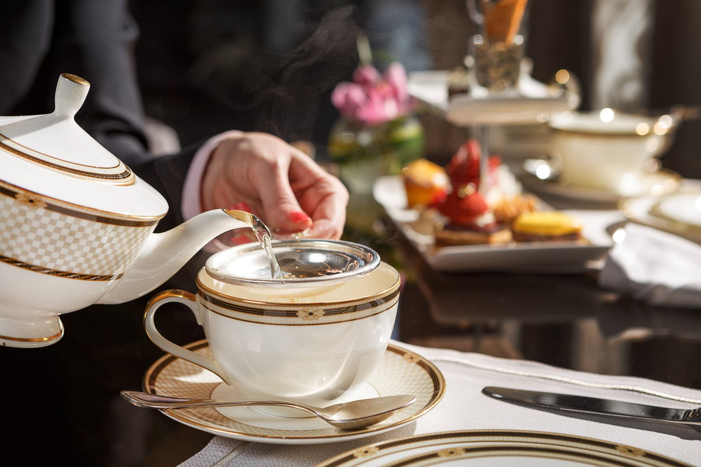
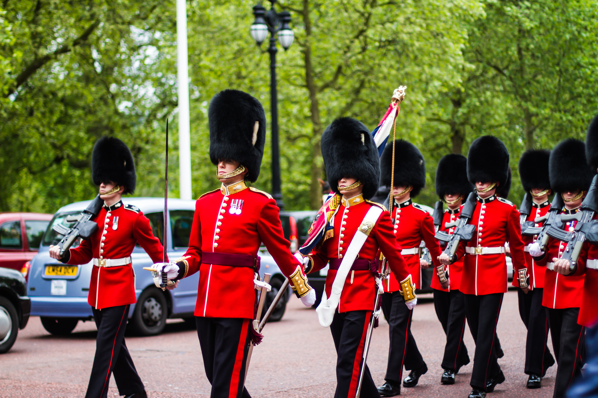
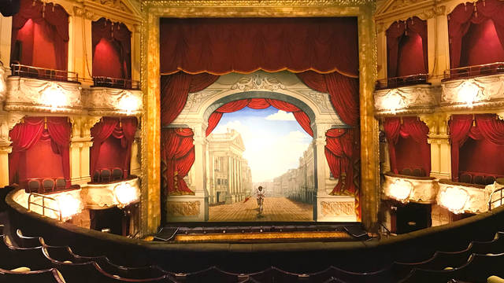
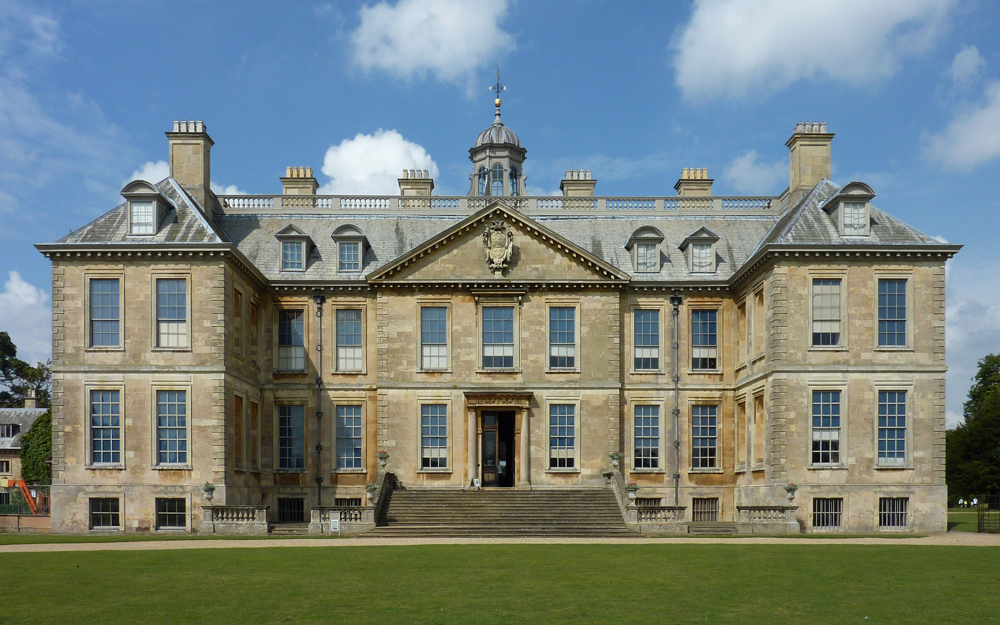
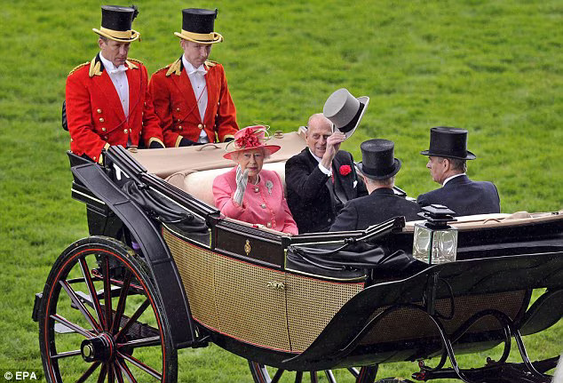
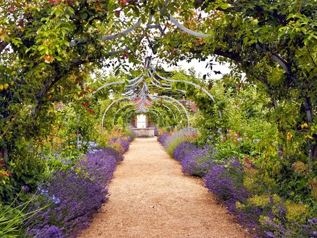
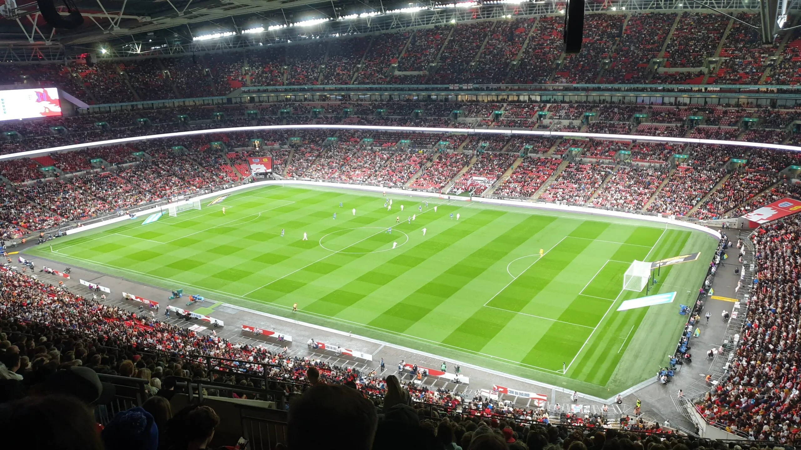
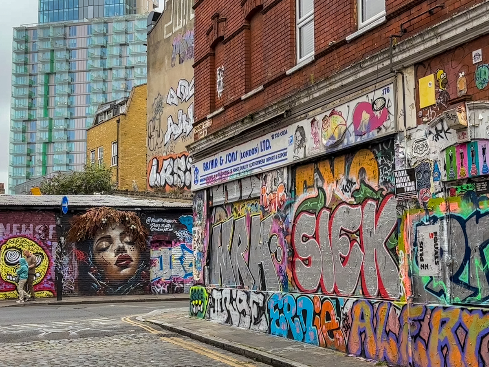
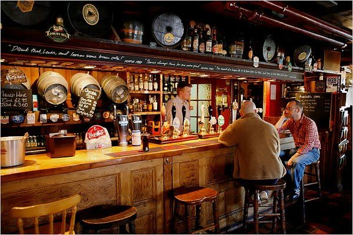

THE BRITISH SOUL
Explore the fascinating duality of English culture: an exquisite masterpiece built upon centuries of rigid royal elegance, seamlessly intertwined with a fierce, loud spirit of modern creative rebellion.
Preserving centuries of old-world charm, aristocratic traditions, and the sophisticated lifestyle that laid the global foundation of high society.

Originating in the 1840s among the high aristocracy, this is not merely about drinking tea. It is a formal social ceremony governed by strict etiquette, featuring fine porcelain china, warm scones with clotted cream, and delicate finger sandwiches.

England fiercely guards its sovereign ceremonies. From the Changing of the Guard at Buckingham Palace to grand royal processions, these traditions display a deep reverence for history, pageantry, and unbroken national legacy.

The timeless words of William Shakespeare, the poetic romances of Jane Austen, and the complex Victorian worlds of Charles Dickens form the crown jewel of world literature, celebrating structural art, deep wit, and human philosophy.

Stately homes like Highclere Castle represent the architectural peak of the English nobility. Surrounded by rolling hills, these limestone estates preserve a legacy of exclusive galas and elite rural pastimes.

As the pinnacle of the British social calendar, this historic equestrian race is as much about high fashion as it is about horses. Strict morning dress codes and top hats define this royal-led tradition.

Rejecting rigid geometric patterns, the classic English landscape garden mirrors a romanticized, natural paradise. Sweeping lawns and hidden pavilions showcase a deep connection to botany and art.
Where rules are broken. Diving deep into the energetic streets of London and Liverpool, where youth subcultures redefined global music, fashion, and passion.
SONIC REVOLUTION
In the damp, underground clubs of the 1960s and 70s, English youth found their raw voice. Bands like The Beatles, Queen, and Pink Floyd shattered boundaries and controlled global pop culture charts forever.
STREET STYLE
Ditching the elite suits of Savile Row, modern English culture thrived on expressive street style—blending high fashion with anti-establishment punk garments.

THE WEEKEND RELIGION
Modern England eats, breathes, and lives football. The Premier League has transcended sports, transforming local club loyalty into a massive contemporary urban identity.

VISUAL DISSENT
From the industrial bricks of Bristol to London's Shoreditch, graffiti evolved into powerful political commentary. The elusive stencil art of Banksy represents a global satirical rebellion against high-art institutions.
COUNTER-CULTURE ASSEMBLY
Far from elite country clubs, the local public house (pub) is the true heart of democratic English socialization—a refuge where working-class wit and community bonds forge daily.

REVOLUTIONARY MEDIA
Through surreal comedy like Monty Python and dark sci-fi masterpieces like Black Mirror, British broadcasting breaks standard cinematic rules, using eccentric storytelling to challenge societal norms.
"British style is a mix of history, heritage, and an absolute refusal to conform."